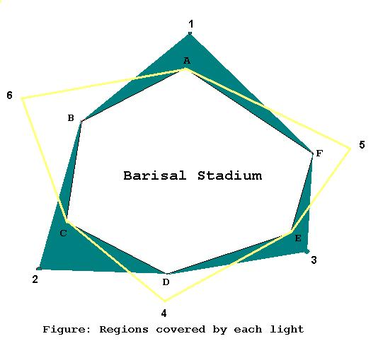

Problem J
Barisal Stadium
Input: Standard Input
Output: Standard Output
Time Limit: 2 Seconds

In the above figure stadium ABCDEF can be covered by two different sets of lights. It takes certain cost to build each floodlight. There are several options to choose the set of lights. In this problem you will have to find the minimum cost to cover the stadium completely. A stadium is completely covered if all of its sides is covered by at least one floodlight.
Output
For each input set print in a line the minimum cost to
build the floodlights. If it is not possible to cover the stadium completely,
then print "Impossible.".
30 010 00 103-1 -1 1011 -1 10-1 11 1030 010 00 103-1 -1 1011 -1 10-1 12 100 |
Impossible.
20 |
Problemsetter: Md. Kamruzzaman, Member of Elite
Problemsetters' Panel
Special Thanks to Mohammad Sajjad Hossain (Alternate solution)
“While it may be uncommon to
find TopCoder in a university course today, over time this may change. Time constrained
contests are a great way to sharpen coding chops, and better coders produce
much more reliable software. The Association for Computing Machinery (ACM)
understands this--they've been doing competitions for thirty years. Perhaps
it's time for mainstream academia to get with the program.”
-pmadden
Source: http://www.topcoder.com/?&t=features&c=feat_030104